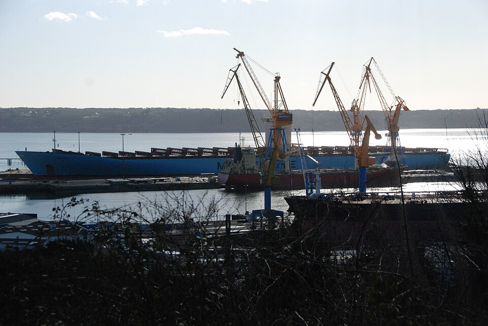
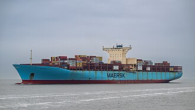
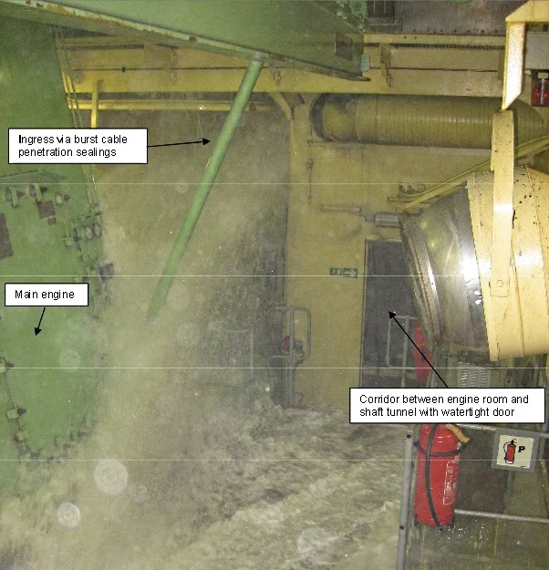

Overview
The Emma Maersk is one of eight "E" class [a class where every ship name starts with E] sister ships owned by the Maersk shipping line. She prides herself on enviormental stewardship and getting things where they need to go when they need to get there. she was previously the world record holder for largest ship ever built.

Ship specs
- Title: MV
- Owner: Moller-Maersk
- Operator: A. P. Moller-Maersk group
- Home port: Taarbaek, Denmark
- Builder: Odense Steel Shipyard
- launch date: May 18 2006
- Call sign: OYGR2 OR 9VCY3
- Length: 1302 feet
- Beam: 183 feet

Her work
The Emma Maersk works as a container cargo ship for the Moller-Maersk company! its common to see containers shes farried around Tennesee and Georgia!
S.O.S! S.O.S!
In 2014 the container ship suffered a flooding incident involving her engine copartment. Thankfully she did not ground or collide with another ship and made berth in the Suez Canal Container Terminal.
